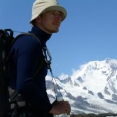

|  |
Johan EnquistPhD, in vitro & in vivo pharmacology scientistContact information My Hobbies |
Scientist with 6 years of postgraduate academic, and 7 years of biotech experience in creating
in vitro and in vivo models aiding in mechanistic dissection of complex
human diseases.
I have spent the last 21 years of my life, starting during my undergraduate degree, studying
G protein-coupled receptor (GPCR) pharmacology. The emphasis of my work has been to understand how
biased agonist activation of GPCRs determines processes as small as kinetics of or specific engagement
of cellular signaling cascades, up to and including full body in vivo physiological output.
Along the way I've honed my skills in chosing (and establishing)
cellular and animal models mechanistically predictive for dissecting the pathology of
complex human diseases including substance abuse, chronic pain and metabolic disorders. I spent the last
7 years in biotech leveraging my knowledge of biased GPCR pharmacology in drug development geared towards
combating metabolic disorders, obesity and type 2 diabetes mellitus (T2DM).
As part of the team at Carmot Therapeutics I contributed by
establishing and running tests in cellular and in vivo models with predictive value for drug effects
in metabolic disorders. The data obtained in these models made up the platform from which we launched
the first clinical trials at the company.
| date | position |
|---|---|
| 2017–2020 | Senior Scientist, Carmot Therapeutics Inc, San Francisco, CA |
| 2013–2017 | Scientist, Carmot Therapeutics Inc, San Francisco, CA, "Managing in vivo pharmacology and ex vivo pharmacology research, support in vitro pharmacology research and pipeline work; in vivo, ex vivo and in vitro assay development" |
| 2011-2013 | Associate Research Scientist, Ernest Gallo Clinic & Research Center, Emeryville, CA, "Continuation of postdoctoral studies of GPCR targets involved in management of pain and substance abuse" |
| date | institution |
|---|---|
| 2011-2013 | Associate Research Scientist, Ernest Gallo Clinic & Research Center, Emeryville, CA,
"Continuation of postdoctoral studies of GPCR targets involved in management of pain and substance abuse" |
| 2007 - 2011 | Postdoctoral Fellow, Ernest Gallo Clinic & Research Center, UCSF, Emeryville, CA; Mentor Professor Jennifer Whistler
"In vitro and in vivo pharmacological studies of pain and addiction models; transition to in vivo modeling" |
| 2002 - 2007 | PhD student, Lund University, Lund, Sweden; Mentor Professor Fredrik Leeb-Lundberg, Dissertation: “The Role of Membrane Trafficking in G Protein-Coupled Receptor Regulation” |
| 2000 - 2001 | Lund Biomedical Research School, Lund University, Lund, Sweden | 1996 - 2000 | MSc student, Lund Biomedical Program, Lund University, Lund, Sweden |
| date | direct report |
|---|---|
| 2018-2020 | scientist Nayaab Khan (Carmot Inc) |
| 2017-2019 | Research associate Jay Simmons (Carmot Inc) |
| 2014-2017 | Research associate Ling Wang (Carmot Inc) |
| 2011-2013 | Research associate Madeline Ferwerda (Ernest Gallo Clinic & Research Center) |
| 2011-2013 | Research associate Ling Wang (Ernest Gallo Clinic & Research Center) |
| 2016 | Intern Zoe Moyer (Carmot Inc) |
| 2014-2015 | Industrial postdoc Suman Atwal (Carmot Inc) |
| 2011 | Volunteer Derek Hok, (Ernest Gallo Clinic & Research Center) |
| 2008 | Masterʼs student Stefan Broselid (Ernest Gallo Clinic & Research Center) |
| 2005-2006 | Carl Skröder, 12 months (Ernest Gallo Clinic & Research Center) |
| 2005-2006 | Tutor, classroom teaching, at Lund University Medical Faculty, MD program |
| 1999 | Developed and taught lecture series in Histology, Lund University Medical Faculty, MD and Biomedical programs |
| 2012-2014 | SBIR grant No. 1-R43-DK-096804-01 Awarded a two year SBIR shift grant from NIH for the project “Discovery of biased small molecule agonists of the GLP-1 receptor for the treatment of metabolic disease”. |
| 2009-2011 | Svenska Stiftelsen for Medicinsk Forskning, postdoctoral fellowship |
| 2007-2009 | European Molecular Biology Organization (EMBO) Long term Fellowship |
| 2000-2001 | Biomedical Research School Fellowship |
| Enquist J, Sandén C, Skröder C, Mathis SA, Leeb-Lundberg LM. “Kinin-stimulated B1 receptor signaling depends on receptor endocytosis whereas B2 receptor signaling does not.” Neurochem Res. 2014 |
| Milan-Lobo L, Enquist J, van Rijn RM, Whistler JL. “Anti-analgesic effect of the mu/delta opioid receptor heteromer revealed by ligand-biased antagonism.” PLoS One. 2013 |
| Enquist J, Ferwerda M, Madhavan A, Hok D, Whistler JL. “Chronic ethanol potentiates the effect of neuropeptide s in the basolateral amygdala and shows increased anxiolytic and anti-depressive effects.” Neuropsychopharmacology. 2012 |
| Enquist J, Kim JA, Bartlett S, Ferwerda M, Whistler JL. “A novel knock-in mouse reveals mechanistically distinct forms of morphine tolerance.” J Pharmacol Exp Ther. 2011 |
| Enquist J, Ferwerda M, Milan-Lobo L, Whistler JL. “Chronic methadone treatment shows a better cost:benefit ratio than chronic morphine in mice” J Pharmacol Exp Ther. 2011 |
| Sandén C, Enquist J, Bengtson SH, Herwald H, Leeb-Lundberg LM. “Kinin B2 receptor-mediated bradykinin internalization and metalloendopeptidase EP24.15-dependent intracellular bradykinin degradation.” J Pharmacol Exp Ther. 2008 |
| Enquist J, Skröder C, Whistler JL, Leeb-Lundberg LM. “Kinins promote B2 receptor endocytosis and delay constitutive B1 receptor endocytosis.” Mol Pharmacol. 2007 |
| Bartlett SE*, Enquist J, Hopf FW*, Lee JH, Gladher F, Kharazia V, Waldhoer M, Mailliard WS, Armstrong R, Bonci A, Whistler JL. ”Dopamine responsiveness is regulated by targeted sorting of D2 receptors.” Proc Natl Acad Sci U S A. 2005 (*these authors contributed equally to this manuscript) |
| Whistler JL, Enquist J, Marley A, Fong J, Gladher F, Tsuruda P, Murray SR, Von Zastrow M. ”Modulation of postendocytic sorting of G protein-coupled receptors.” Science. 2002 |